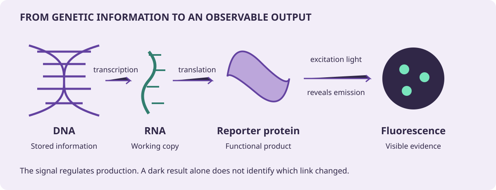

CRISPR systems evolved as microbial defenses. Scientists adapted them to target genetic material. Here, guide RNA helps a Cas9 protein recognize DNA; the cell’s repair machinery acts after the cut. Synthetic biology goes further: it combines biological parts into systems with a chosen function.
A gene is a stretch of DNA whose information can help a cell make a functional product. For our reporter gene, the cell copies DNA into RNA (transcription), then uses RNA to build a protein (translation). A fluorescent reporter protein lets us observe part of this process.

A DNA edit can affect a protein, but visible fluorescence also depends on the regulatory signal and excitation light. Follow each link before concluding that a dark cell has a disrupted gene. Original ClassroomOS schematic.
Guide RNA: the address
Its targeting sequence pairs with DNA. It brings sequence specificity; it does not perform the repair.
Cas9: the cutting protein
For this enzyme, a nearby PAM is required before guide pairing can lead to a cut.
Cell repair: the outcome
The cell rejoins broken DNA. Repair may disrupt a gene, preserve function, or use a supplied template.
Where did CRISPR come from?
In many bacteria and archaea, CRISPR regions store fragments of genetic material from past invaders. RNAs made from these stored sequences help CRISPR-associated proteins recognize matching invader sequences. Scientists adapted this sequence-directed defense for editing. The lab below models one adapted system, SpCas9, rather than every CRISPR system.
1
Can the guide find its address?
Change one condition at a time: the RNA sequence or the adjacent PAM.
Investigation 1 · Two conditions, one question
Predict whether a matching guide will work without a valid PAM. Test the matching guide, one mismatch, and the missing-PAM condition. Explain which condition prevented recognition each time.
Fictional DNA window
Only 12 bases are shown for readability. A typical SpCas9 guide has about 20 targeting bases plus an RNA scaffold. This shortened model is not a guide-design tool.
DNA strand with PAM, 5′ → 3′
ATGCCATAGCTATGG
Paired DNA strand, 3′ → 5′
TACGGTATCGATACC
Guide RNA fragment, 5′ → 3′
RNA pairs with the lower DNA strand: A–U and C–G. Its letters match the upper strand except U replaces T. The PAM is DNA beside the target; it is not part of the guide.
Violet: paired baseOutlined ×: mismatchGold: PAM region
Read left to right. Enter RNA letters, not DNA’s T.
For the SpCas9 model, N can be any DNA base, followed by two Gs. Other CRISPR enzymes have different requirements.
Load a guide or build your own fragment, then check it.
2
A recognized site is not a finished edit
Follow the cut, then compare possible repair outcomes in a model cell.
Investigation 2 · Same cut, different consequences
Keep a matching guide and valid PAM. Complete all three repair scenarios. Does every repaired cell lose reporter function? Use the sequence evidence below as well as the dishes.
Ready
Recognize
Cut
Repair
Check a matching guide and valid PAM to unlock the cut model.
These are chosen teaching scenarios, not predicted success rates. A cut alone does not guarantee a knockout or an insertion.
Illustrative sequence evidence
No repaired sequence yet. Complete the repair stage to compare evidence.
These local sequence sketches do not show a whole gene or predict its reading frame. The stated protein effects are assumptions of each scenario.
A small insertion or deletion can disrupt a gene, but not every small change does.
Repair pathways vary across organisms and cell types. We do not model delivery, viability, repair chemistry, or editing efficiency.
3
Does the change alter the output?
Compare a model population carrying the chosen outcome with an unedited control.
Investigation 3 · Diagnose a dark population
With signal and light on, compare each outcome. Then turn off only the light; restore it and turn off only the signal. Can the same visible result have different causes?
This fictional circuit makes a fluorescent protein when a signal is present. Blue excitation light reveals its fluorescence. Fluorescence needs incoming light; bioluminescence generates light through a chemical reaction.
Both populations receive the same signal and light. Colors are illustrative. Every cell on the right shares one chosen outcome; this does not represent the mixed results of a real editing experiment. Protein production and turnover are shown instantly.
Predict first: can darkness prove a knockout?
No. A functional reporter can appear dark if the signal or excitation light is absent. Compare the control under the same conditions, and use DNA sequence evidence to confirm an edit.
Your comparison record
Up to six most recent observations in this session
Modeled outcome
Signal / light
Control / edited
Run a comparison, then record what you see.
Check your reasoning
Choose the conclusion supported by the observation.
Specific does not mean infallible
This model only accepts an exact match at one fictional site. Real Cas9 may tolerate some mismatches and act at unintended sites. We are not scanning a genome or predicting off-target activity.
Explain: Why do both the guide sequence and a PAM matter? What evidence would you need beyond a glowing population?
Design a function. Defend a decision.
Synthetic biology connects inputs, regulatory parts, and outputs. CRISPR is one possible tool for changing those parts; the two fields are related, but not identical.
Imagine a cell-based environmental sensor. What should turn it on? What would count as a false alarm? Who should decide where it is used?
Your evidence-based claim
State the condition you changed.
Compare the edited population with its control.
Explain the result using guide RNA, PAM, repair, and reporter.
Name one thing this model cannot establish.
Extend the discussion: human genome editing
Compare an edit intended to treat disease with one intended to enhance a trait. Who can consent? Could a change be inherited? Who bears the risks and who gets access? What evidence and public oversight should be required?